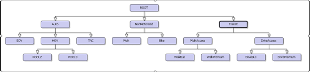
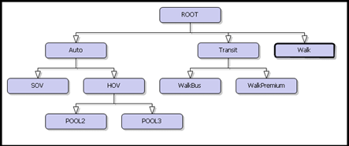
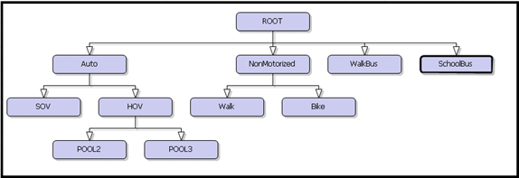
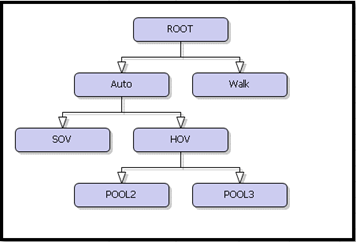

Mode Choice
The mode choice model within the MRM is a nested logit model, with the basic form of the logit model that has “N” modes, is represented by the following equation:
\[ \text{Share}_{\text{mode A}} = \frac{e^{-U_{\text{mode A}}}}{e^{-U_{\text{mode A}}} + \cdots + e^{-U_{\text{mode N}}}} \] Where: • SharemodeA is the share of trips that use mode A • e-u is the natural logarithm of the utility of any particular mode.
Utility is a term used in econometrics to define the satisfaction received from using a product or service. In mode choice models it converts different types of measures that influence travel behavior decisions into comparable units so that the choices available can be evaluated against each other. Utilities are a function of highway travel time, transit travel time, transit fare, parking and toll costs, land use characteristics, and household characteristics. Basic modes are travel by auto, transit, walking and biking. These are further divided in lower levels of the nesting structure. Travel by auto can be drive alone, 2-person carpools, or 3 or more person carpools. For transit trips, patrons can approach by walking or driving. Further they have options of premium service (light rail, bus rapid transit, and commuter rail), express bus service, or local bus service.
Each mode choice utility has three basic components:
Variable: Travel times, wait times, parking costs, etc. Transit variables are from transit skim matrices. Highway variables are built primarily from the highway skims using free-flow and congested travel times, as well as parking costs.
Coefficient: A relative weight that people subconsciously apply in making their mode decision. For example, people generally place a higher value on the time waiting than time spent traveling (because it feels like a longer time). The coefficients for the Metrolina model are borrowed primarily from the Houston-Galveston travel demand model (Houston-Galveston Area Council. Regional Travel Models. 1995 Model Validation and Documentation Report, February, 2001). These have been modified to fit the Metrolina model, but are similar to other models throughout the country.
Constant: Many components of the mode choice decision are not dependent on travel characteristics. For example, some people must have their car at work for travel during the day. Others are disinclined to use transit for any reason. These types of issued are handled through a constant unrelated to the travel variables.
The mode choice model for the MRM was estimated based on the household survey records for 6 tour purposes: Work, Other, Shop, University, Sub-Tour and School tours. These models are estimated as nested logit models. Note that the previous Metrolina model did not have a mode choice model for school tours since it was based on a fixed shares model.
In the context of application, the tour mode choice model is applied after the tour destinations and tour time of day are determined. The mode choice model is applied to each of the origin-destination pairs to determine the choice.
The survey records were scanned for frequency of observations, shown in the table below:
| Mode | Work | Other | School | Shop | SubTour | University |
|---|---|---|---|---|---|---|
| SOV | 2157 | 2904 | 45 | 1259 | 238 | 82 |
| HOV2 | 364 | 2167 | 265 | 746 | 44 | 32 |
| HOV3 | 171 | 1458 | 483 | 253 | 19 | 18 |
| Walk | 75 | 756 | 24 | 79 | 114 | 14 |
| Bike | 27 | 58 | 5 | 14 | 1 | 1 |
| Walk Bus | 34 | 36 | 12 | 8 | 1 | 5 |
| Walk Rail (Premium) | 36 | 28 | 0 | 4 | 2 | 3 |
| Drive Bus | 21 | 14 | 5 | 4 | 0 | 2 |
| Drive Rail (Premium) | 21 | 17 | 0 | 0 | 0 | 3 |
| School Bus | 3 | 7 | 371 | 0 | 0 | 2 |
| Taxi | 0 | 4 | 0 | 0 | 0 | 0 |
| TNC | 19 | 22 | 1 | 11 | 0 | 1 |
| LD passenger | 1 | 3 | 0 | 0 | 1 | 0 |
| Micromobility | 2 | 3 | 0 | 3 | 1 | 0 |
| Missing | 0 | 5 | 0 | 1 | 2 | 0 |
| Total Observations | 2931 | 7482 | 1211 | 2382 | 423 | 163 |
The number of observations for each tour purpose determines the alternative set of modes that can be estimated. Some highlights from the above table are:
- Observations with chosen modes micromobility and LD passenger are ignored since there are very few records. Missing mode records are obviously dropped.
- Taxi is combined with TNC (Transport Network Company) during estimation and only estimated for the ‘Work’, ‘Other’ and ‘Shop’ purposes.
- School Bus is an alternative only for the ‘School’ purpose. Records with school bus choice for ‘Work’ and ‘Other’ purpose are ignored.
- The full set of transit modes (Walk Access to Bus, Walk Access to Rail, Drive Access to Bus, Drive Access to Rail) are alternatives only for the ‘Work’ and ‘Other’ tour purpose.
- Only Walk Access transit modes are considered as alternatives for the ‘Shop’ purpose. The drive access to bus is typically ignored for shopping trips as it is unlikely in practice, although very few respondents chose this mode.
- Walk Access to Bus is the only transit alternative for the school purpose.
- The Subtour mode choice set comprises only of the Auto modes and the Walk mode.
General Estimation Notes
- Nested Logit (NL) models are estimated for various purposes, which have significant advantages over Multinomial (MNL) mode choice models, especially if there are similar alternatives (such as SOV, HOV2, HOV3).
- The nesting structure can vary by purpose and do have multiple levels. Each alternative in a higher nest has a nest coefficient or theta that is typically estimated if possible. However, for the Metrolina model, estimation was possible only if these nesting coefficients were fixed. Values of 0.7 for the upper nests and 0.5 for the lower nest alternative are typical values and yielded successful estimation of other parameters.
- Since the model is applied in a disaggregate fashion, household variables such as income can be directly used in the model utility specification. There is no need to split data/productions into market segments before applying the models.
- The utility terms and relationships between the various parameters are similar to the previous model.
- T-stats of estimated coefficients are shown.
Estimation Results
For each of the purposes, the nesting structure, the utility table along with estimated model coefficients and expressions, values of parameters and nest coefficients are shown. The rho-sq is shown at the bottom of the utility table. In the utility table, an X in a particular column (each alternative is a column) indicates that the utility term (row) is active for that alternative. If a cell in any column does not have an X, then that term does not apply to that column (alternative).
Constants Table
The constants in the table below are common to all estimated models.
| Parameter | Value | Nest Coefficient | Coefficient Value |
|---|---|---|---|
| vot1 | 6.70 c/min (4 $/hr) | Level 1 | 0.7 |
| vot2 | 13.35 c/min (8 $/hr) | Level 2 | 0.5 |
| vot3 | 24.74 c/min (14.8 $/hr) | ||
| vot4 | 31.45 c/min (18.9 $/hr) | ||
| AOC (Auto Operating Cost) | 10 c/mile | ||
| OCC (Occupancies SOV, POOL2, POOL3) | 1.0, 2.0, 3.3 | ||
| Walk Rail (Premium IVTT Discount) | 0.3 | ||
| Note: VOT = Value of Time; IVTT = In Vehicle Travel Time |
Work Tour Purpose
Tree Structure

| Variable | Formula | Derived.Coefficient | t.Stat | SOV | POOL2 | POOL3 | TNC | Walk | Bike | WalkBus | WalkPremium | DriveBus | DrivePremium |
|---|---|---|---|---|---|---|---|---|---|---|---|---|---|
| Constant (SOV) | 1.79 | 5.31 | X | ||||||||||
| Constant (POOL2) | 0.564 | 1.66 | X | ||||||||||
| Constant (POOL3) | 0.145 | 0.43 | X | ||||||||||
| Constant (WALK) | -0.219 | -0.58 | X | ||||||||||
| Constant (BIKE) | -1.45 | -3.86 | X | ||||||||||
| Constant (WalkBus) | 1.45 | 3.52 | X | ||||||||||
| Constant (WalkPremium) | 1.65 | 4.11 | X | ||||||||||
| Constant (DriveBus) | -2.46 | -4.38 | X | ||||||||||
| Constant (DrivePremium) | -2.08 | -3.69 | X | ||||||||||
| Auto Time | IVTT | -0.021 | -10.96 | X | X | X | |||||||
| Auto Time TNC | -0.091 | -5.17 | X | ||||||||||
| ParkCost (Income 1) | IVTT/(2 x vot1 x occ) | X | X | X | |||||||||
| ParkCost (Income 2) | IVTT/(2 x vot2 x occ) | X | X | X | |||||||||
| ParkCost (Income 3) | IVTT/(2 x vot2 x occ) | X | X | X | |||||||||
| ParkCost (Income 4) | IVTT/(2 x vot2 x occ) | X | X | X | |||||||||
| Auto Distance (Income1) | IVTT x AOC/(vot1 x occ) | X | X | X | |||||||||
| Auto Distance (Income2) | IVTT x AOC/(vot2 x occ) | X | X | X | |||||||||
| Auto Distance (Income3) | IVTT x AOC/(vot3 x occ) | X | X | X | |||||||||
| Auto Distance (Income4) | IVTT x AOC/(vot4 x occ) | X | X | X | |||||||||
| Low Income (IncCat <= 2): NM | 0.537 | 1 | X | X | |||||||||
| IntraZonal Trip (Walk) | 1.55 | 5.32 | X | ||||||||||
| Walk/Bike Time | IVTT | X | X | ||||||||||
| Low Income (IncCat <= 2): Transit | 1.03 | 2.91 | X | X | X | X | |||||||
| CBD Destination (Drive Transit) | 1.73 | 3.7 | X | X | |||||||||
| IVTT | IVTT | X | X | ||||||||||
| IVTT - 0.3*IVTT_PremiumLeg | IVTT | ||||||||||||
| Fare (Income1) | IVTT/vot1 | X | X | X | X | ||||||||
| Fare (Income2) | IVTT/vot2 | X | X | X | X | ||||||||
| Fare (Income3) | IVTT/vot3 | X | X | X | X | ||||||||
| Fare (Income4) | IVTT/vot4 | X | X | X | X | ||||||||
| Access + Egress + Transfer Walk | IVTT x 2.5 | X | X | ||||||||||
| Drive Access Time | IVTT | X | X | ||||||||||
| Initial Wait Time | IVTT x 1.5 | X | X | X | X | ||||||||
| Transfer Wait Time | IVTT x 2 | X | X | X | X | ||||||||
| Transfer Penalty Time | IVTT | X | X | X | X | ||||||||
| Note: Rho²: 0.577 |
Features of the Utility Specification:
The ‘Variable’ column in the above table indicates the utility variable. During application, the appropriate variable from the skims matrix or the TAZ layer will be used. A ‘Constant’ indicates that the term is an alternative specific constant typically applicable to one of the alternatives.
The ‘Derived Coefficient Formula’ indicates any derived coefficients. For example, the ‘Fare (Income 1)’ variable has a derived coefficient of IVTT/vot1. The IVTT coefficient from an earlier row can be seen as -0.0210. The value of time for the first income class, i.e., vot1 value from the constant’s parameter table is 6.7 c/min. Thus the ‘Fare (Income 1)’ has a coefficient of -0.0210/6.7 = -0.003134. Note that for certain derived coefficients, the values of the parameter will vary based on the alternative. For example, the occ parameter in the ‘Auto Distance (Income1)’ term is 1.0 for the SOV alternative, 2.0 for the HOV2 alternative and 3.3 for the HOV3 alternative.
The estimated coefficient and the t-statistic are shown in the columns ‘Coefficient’ and ‘t-statistic’. Only estimated coefficients (and not derived ones) will have an associated t-statistic. Typically, an absolute t-statistic of over 1.96 indicates a 95% confidence in the estimate. Some coefficients such as alternate specific constants (ASCs) may be retained even though they have poor t-stats. Note that it is expected that these ASCs are adjusted during model calibration.
The remainder of the columns form the alternatives and an X for any row indicates that the variable (row) is applicable to that alternative. The partial utility term in this case is the coefficient (or derived coefficient) multiplied by the variable value. For example, the utility equation for TNC is -0.0910 x ’Auto Time TNC’. The utility specification for the ‘Walk’ alternative is -0.2190 + 0.5370 x’Low Income Dummy’ + 1.55 x ’Intrazonal Dummy’ -0.0210*’WalkTime’. Note that the ASC term is simply multiplied by 1 and added.
It may be easier to look at a particular column (alternative), find the rows marked X and determine the partial utility term by multiplying the variable with the coefficient.
Model Estimation Notes
The model is Nested Logit with main nests for the Auto, Non-Motorized and Transit modes. The nest coefficient at this level is asserted to be 0.7. The HOV nest has children POOL2 and POOL3. The transit nest is further split based on access mode. The nest coefficients at all these levels are asserted to be 0.5. Note that similar alternatives (or alternatives that can be more easily substituted with each other) form a nesting group.
The Auto modes are sensitive to travel time, travel distance (that affects the auto operation cost) and parking. The relationships between the coefficients of the parking terms, auto operation costs (AOC) and time are consistent with the previous Metrolina model including the values of the vot, aoc parameters.
Transit alternatives included both walk and drive access to Bus and Premium modes. The relationships between various transit skims such as In-Vehicle Travel Time (IVTT) and Fare etc. were borrowed from the previous model. Note that the IVTT on any premium transit leg is discounted by 30%. The previous model had further discounts to the premium modes, which we eliminated.
Intrazonal effects are strong for the non-motorized modes.
Low Income has a positive effect on transit choice.
CBD destination has a positive impact on choice of transit.
Since the mode choice is now applied in a disaggregate fashion (as opposed to aggregate before), the income designation is available for each record. Thus, there is no need to split the data by income class and apply different models to each class. The appropriate utility term pertaining to the income class will be used directly.
The model rho-sq is a very good 0.577 with small ASCs. This typically indicates an excellent fit.
Other Tour Purpose
Tree Structure 
Utility Table| Variable | Formula | Derived.Coefficient | t.Stat | SOV | POOL2 | POOL3 | TNC | Walk | Bike | WalkBus | WalkPremium | DriveBus | DrivePremium |
|---|---|---|---|---|---|---|---|---|---|---|---|---|---|
| Constant (SOV) | 3.47 | 11.96 | X | ||||||||||
| Constant (POOL2) | 3.3 | 11.4 | X | ||||||||||
| Constant (POOL3) | 3.09 | 10.65 | X | ||||||||||
| Constant (WALK) | 2.91 | 9.68 | X | ||||||||||
| Constant (BIKE) | 0.542 | 1.74 | X | ||||||||||
| Constant (WalkBus) | 2.84 | 7.33 | X | ||||||||||
| Constant (WalkPremium) | 2.85 | 7.08 | X | ||||||||||
| Constant (DriveBus) | -2.47 | -3.62 | X | ||||||||||
| Constant (DrivePremium) | -0.687 | -1.24 | X | ||||||||||
| Auto Time | IVTT | -0.0304 | -18.17 | X | X | X | |||||||
| Auto Time TNC | -0.034 | -3.05 | X | ||||||||||
| ParkCost (Income 1) | IVTT/(2 x vot1 x occ) | X | X | X | |||||||||
| ParkCost (Income 2) | IVTT/(2 x vot2 x occ) | X | X | X | |||||||||
| ParkCost (Income 3) | IVTT/(2 x vot2 x occ) | X | X | X | |||||||||
| ParkCost (Income 4) | IVTT/(2 x vot2 x occ) | X | X | X | |||||||||
| Auto Distance (Income1) | IVTT x AOC/(vot1 x occ) | X | X | X | |||||||||
| Auto Distance (Income2) | IVTT x AOC/(vot2 x occ) | X | X | X | |||||||||
| Auto Distance (Income3) | IVTT x AOC/(vot3 x occ) | X | X | X | |||||||||
| Auto Distance (Income4) | IVTT x AOC/(vot4 x occ) | X | X | X | |||||||||
| Low Income (IncCat <= 2): NM | 1.65 | 16.47 | X | X | |||||||||
| IntraZonal Trip (Walk) | 1.24 | 5.12 | X | ||||||||||
| Walk/Bike Time | IVTT | X | X | ||||||||||
| Low Income (IncCat <= 2): Transit | 2.65 | 8.87 | X | X | X | X | |||||||
| CBD Destination (Drive Transit) | 1.22 | 2.25 | X | X | |||||||||
| IVTT | IVTT | X | X | ||||||||||
| IVTT - 0.3*IVTT_PremiumLeg | IVTT | ||||||||||||
| Fare (Income1) | IVTT/vot1 | X | X | X | X | ||||||||
| Fare (Income2) | IVTT/vot2 | X | X | X | X | ||||||||
| Fare (Income3) | IVTT/vot3 | X | X | X | X | ||||||||
| Fare (Income4) | IVTT/vot4 | X | X | X | X | ||||||||
| Access + Egress + Transfer Walk | IVTT x 2.5 | X | X | ||||||||||
| Drive Access Time | IVTT | X | X | ||||||||||
| Initial Wait Time | IVTT x 1.5 | X | X | X | X | ||||||||
| Transfer Wait Time | IVTT x 2 | X | X | X | X | ||||||||
| Transfer Penalty Time | IVTT | X | X | X | X | ||||||||
| Note: Rho²: 0.384 |
Model Estimation Notes
The model has a very similar structure to the Work model.
Like the work model, Intrazonal effects are significant for non-motorized modes, low-income effect is associated with higher transit usage probability and CDB destinations have a positive effect on transit choice.
The model rho-sq 0.384 and indicates a good fit.
All values of constants such as vot1, occ etc. are unchanged from those used in the ‘Work’ model.
University Tour Purpose
Tree Structure 
Utility Table| Variable | Formula | Derived.Coefficient | t.Stat | SOV | POOL2 | POOL3 | Walk | WalkBus | WalkPremium |
|---|---|---|---|---|---|---|---|---|---|
| Constant (SOV) | 2.17 | 1.89 | X | ||||||
| Constant (POOL2) | 1.64 | 1.42 | X | ||||||
| Constant (POOL3) | 1.35 | 1.16 | X | ||||||
| Constant (WALK) | 1.08 | 0.99 | X | ||||||
| Constant (WalkBus) | 0.818 | 1.25 | X | ||||||
| Auto Time | IVTT | -0.0134 | -2.63 | X | X | X | |||
| ParkCost (Income 1) | IVTT/(2 x vot1 x occ) | X | X | X | |||||
| ParkCost (Income 2) | IVTT/(2 x vot2 x occ) | X | X | X | |||||
| ParkCost (Income 3) | IVTT/(2 x vot2 x occ) | X | X | X | |||||
| ParkCost (Income 4) | IVTT/(2 x vot2 x occ) | X | X | X | |||||
| Auto Distance (Income1) | IVTT x AOC/(vot1 x occ) | X | X | X | |||||
| Auto Distance (Income2) | IVTT x AOC/(vot2 x occ) | X | X | X | |||||
| Auto Distance (Income3) | IVTT x AOC/(vot3 x occ) | X | X | X | |||||
| Auto Distance (Income4) | IVTT x AOC/(vot4 x occ) | X | X | X | |||||
| Walk Time | IVTT | X | |||||||
| Low Income (IncCat <= 2): Transit | 1.92 | 1.99 | X | X | |||||
| CBD (Transit) | 1.86 | 1.97 | X | X | |||||
| IVTT | IVTT | X | |||||||
| IVTT - 0.3*IVTT_PremiumLeg | IVTT | ||||||||
| Fare (Income1) | IVTT/vot1 | X | X | ||||||
| Fare (Income2) | IVTT/vot2 | X | X | ||||||
| Fare (Income3) | IVTT/vot3 | X | X | ||||||
| Fare (Income4) | IVTT/vot4 | X | X | ||||||
| Access + Egress + Transfer Walk | IVTT x 2.5 | X | X | ||||||
| Initial Wait Time | IVTT x 1.5 | X | X | ||||||
| Transfer Wait Time | IVTT x 2 | X | X | ||||||
| Transfer Penalty Time | IVTT | X | X | ||||||
| Note: Rho²: 0.449 |
Model Estimation Notes
The drive access modes to transit and TNC were dropped, due to insufficient records. The drive access modes to transit can be added during application if desired.
Other model effects common to the work and other purpose persist.
The model rho-sq 0.267 again indicates a decent fit given the estimation record set size especially for non-frequent modes.
School Purpose Tour
Tree Structure 
Utility Table| Variable | Formula | Derived.Coefficient | t.Stat | SOV | POOL2 | POOL3 | Walk | Bike | WalkBus | SchoolBus |
|---|---|---|---|---|---|---|---|---|---|---|
| Constant (SOV) | 3.58 | 4.84 | X | |||||||
| Constant (POOL2) | 5.05 | 6.91 | X | |||||||
| Constant (POOL3) | 5.31 | 7.32 | X | |||||||
| Constant (WALK) | 2.21 | 2.86 | ||||||||
| Constant (WalkBus) | 3.28 | 2.88 | X | |||||||
| Constant (School Bus) | 5.31 | 7.15 | ||||||||
| School Bus Time | -0.0299 | -3.72 | ||||||||
| Auto Time | IVTT | -0.0063 | -1.38 | X | X | X | ||||
| IntraZonal Trip (Walk) | 1.96 | 4.02 | X | |||||||
| IntraZonal Trip (Bike) | 3.47 | 4.13 | ||||||||
| Walk/Bike Time | IVTT | X | X | |||||||
| Low Income (IncCat <= 2): Transit | 2.12 | 2.98 | X | |||||||
| IVTT | IVTT | X | ||||||||
| Fare (Income1) | IVTT/vot1 | X | ||||||||
| Fare (Income2) | IVTT/vot2 | X | ||||||||
| Fare (Income3) | IVTT/vot3 | X | ||||||||
| Fare (Income4) | IVTT/vot4 | |||||||||
| Initial Wait Time | IVTT | -0.115 | -1.79 | X | ||||||
| Note: Rho²: 0.328 |
Model Estimation Notes
The school tour mode choice replaces the fixed shares model.
Walk access to bus is the only transit alternative. There is no TNC alternative.
School Bus is an added alternative.
Low-income effect having a positive effect on bus utility persists.
Intrazonal effects for non-motorized modes persist.
Neither auto-operative nor parking costs are considered as utility terms.
The model rho-sq 0.328 again indicates a good fit.
Sub-Tour Purpose Tour
Tree Structure 
Utility Table| Variable | Formula | Derived.Coefficient | t.Stat | SOV | POOL2 | POOL3 | Walk |
|---|---|---|---|---|---|---|---|
| Constant (SOV) | 1.7700 | 11.68 | X | ||||
| Constant (POOL2) | 0.5310 | 3.59 | X | ||||
| Constant (WALK) | 2.2900 | 7.68 | |||||
| Auto Time | IVTT | -0.1240 | -7.41 | X | X | X | |
| ParkCost (Income 1) | IVTT/(2vot1occ) | X | X | X | |||
| ParkCost (Income 2) | IVTT/(2vot1occ) | X | X | X | |||
| ParkCost (Income 3) | IVTT/(2vot1occ) | X | X | X | |||
| ParkCost (Income 4) | IVTT/(2vot1occ) | X | X | X | |||
| Auto Distance (Income 1) | IVTTAOC/(vot1occ) | X | X | X | |||
| Auto Distance (Income 2) | IVTTAOC/(vot1occ) | X | X | X | |||
| Auto Distance (Income 3) | IVTTAOC/(vot1occ) | X | X | X | |||
|
Auto Distance (Income 4) |
IVTTAOC/(vot1occ) | ||||||
| IZ Walk | 0.6270 | 1.76 | X | ||||
| Walk Time | IVTT | X | |||||
| Note: Rho²: 0.452 |
Model Estimation Notes
The sub-tour mode choices are limited to auto modes and the walk mode.
Auto mode utility terms consist of travel time, auto operating cost and parking cost.
Intrazonal effect has a positive impact on walk mode utility.
The model rho-sq 0.452 indicates a good fit.
Model calibration: Constant (ASC) adjustments
Typically, logit models are estimated without survey weights. Post estimation, alternate specific constants are adjusted to match weighted survey shares by mode. A similar procedure was adapted for the Charlotte model.
The one complication is that transit weighted shares from the survey are not reliable due to the small sample size and therefore cannot be taken at face value. Instead, transit mode choice calibration heavily depends on external data such as observed boardings by transit mode. The initial application of the mode choice model (with constants adjusted to match survey weighted shares) resulted in model boardings well above the observed boardings. The transit shares were therefore lowered significantly, and new constants were established. These constants are updated in the model specifications and used during application.